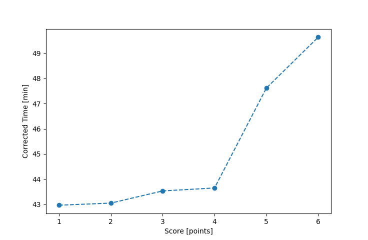

| Wind: | 2-3 (BFT) |
|---|---|
| RC: | John_T, Mike_S, Ralph_H |
| Date: | May 07, 2017 |
| Notes: | M3 180 |
| Rank / Score | Name | Boat | Input Time [mm:ss] | Input Offset [mm:ss] | Race Time [mm:ss] | Race Time [s] | Handicap | Corrected Time [s] | Corrected Time [mm:ss] |
|---|---|---|---|---|---|---|---|---|---|
| 1.0 | Nedra_F | SF | 43:08 | 00:00 | 43:08 | 2588 | 1.00400 | 2578 | 42:58 |
| 2.0 | Art_M | SWSX | 41:17 | 00:00 | 41:17 | 2477 | 0.95900 | 2583 | 43:03 |
| 3.0 | Bill_P | SF | 43:42 | 00:00 | 43:42 | 2622 | 1.00400 | 2612 | 43:32 |
| 4.0 | Mike_F | SF | 43:49 | 00:00 | 43:49 | 2629 | 1.00400 | 2619 | 43:39 |
| 5.0 | Lewis_V | BCN | 41:26 | 00:00 | 41:26 | 2486 | 0.87000 | 2857 | 47:37 |
| 6.0 | Chris_E | SF | 49:50 | 00:00 | 49:50 | 2990 | 1.00400 | 2978 | 49:38 |
| 7.0 | Barry_O | HLR14 | DNF | -- | -- | -- | -- | -- | DNF |

Application Notes:
All race results are unofficial
View source code at https://github.com/cessnao3/portsmouthracecalc/